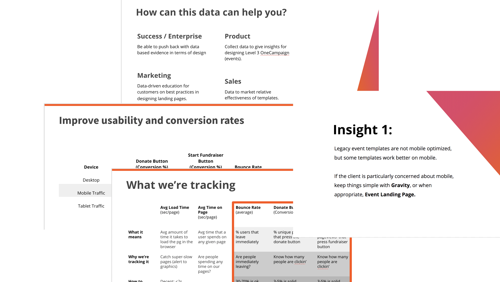

Design at CrowdRise by GoFundMe
June 2017- April 2018
My primary role was as a designer for the non-core product, custom enterprise solutions. I worked with Customer Success Strategists to design and create custom landing pages for our biggest enterprise and premium partners, such as Red Cross, American Cancer Society and Habitat for Humanity.
I also used UX research and design methods to take on number of projects to support the work of other teams, including marketing, customer services, customer success and product design, utilizing my expertise in analyzing analytics, information architecture design, user research methods, beta testing and front-end development.
Optimizing landing pages with data driven design
When I joined, the Graphics team created 20-50 landing pages a week for non-profits events, but no data on how these pages performed. Part of the problem was the lack of ability to compare design to design, because each build was very different. Additionally, the lack of templates made working with partners a long and tiresome process- really acting like a small in house design studio.
This project involved multiple steps- creating templates for basic landing page designs, tracking data and communicating data-backed best practices to partners. The team created six landing pages for partners to choose, with different goals in mind. Sales and Customer success were involved in testing prototypes of the wireframes to get initial insights before launching. With the goal of developing data to back up best practices, I implemented Google Analytics tracking with a universal tagging system on all the templated designs, to easily track how well each template performed. Data was reviewed on a page by page basis to identify big issues in usability, and after three months to consolidate major insights and finding to communicate to partners. Most weren’t all that surprising, but having the data gave the team power.
 For example:
Reimagining the Success Center with Card Sorting
CrowdRise shifted from being a service-based company to a product-based, self service model in 2017. With that, the company needed to improve the resources that customers could access on their own, to empower them to solve their own problems and reduce reliance on customer service and success employees. I helped the customer service and success leads take a user centered approach, using information architecture strategies to organize all the quality content, and make it easy for users to find what they’re looking for.
First, I worked with internal subject matter experts to consolidate all content into an information architecture chart in excel. Collaborative meeting with stakeholders, using semi-organized cards as a tool. Research into Zendesk themes Ideation Low-Fi Sketches Hi-Fi Designs Zendesk revamp screenshots
Prioritizing Features through Personas
While working as a designer at CrowdRise by GoFundMe, I focused on identifying gaps in the new MVP product, delivering clear feedback to the product team for key usability issues and high priority features, and identifying opportunities for increased services with enterprise partners.
Charity Profile Pages were a poorly designed artifact of the old CrowdRise product, and the product team initially chose not to include them in the MVP product. However, the services team was finding that many of their Premium and Enterprise partners were choosing to stick with the legacy product in order to keep their profile pages. I conducted user research with the services team to understand why partners were interested in having profile pages, and how they might be redefined and improved in the new product.